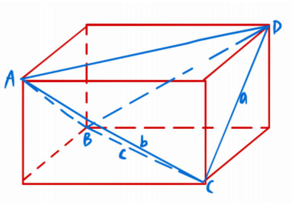
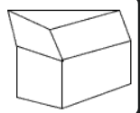
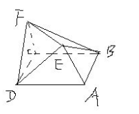
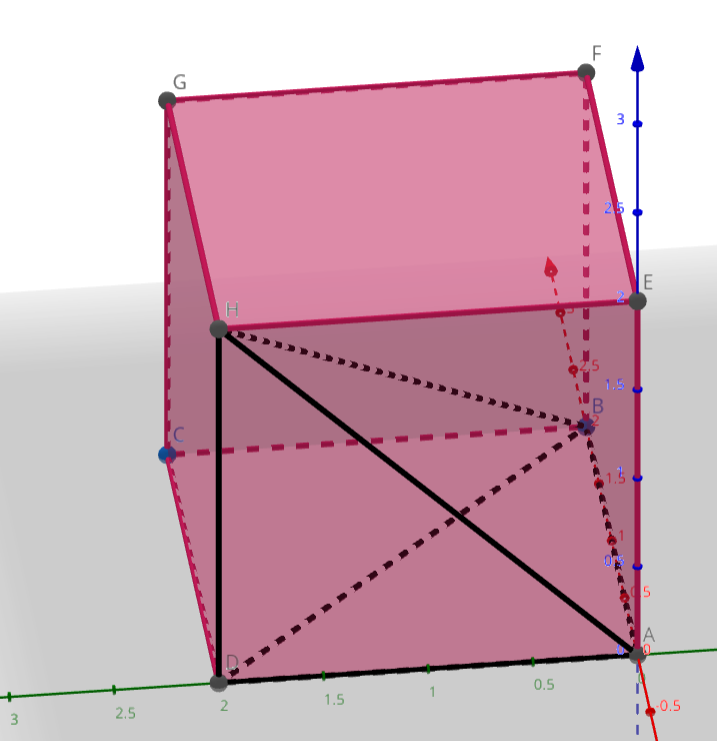

数学知识点汇总
不等式
不能推出 ，因为可能 .
充要条件、全称量词与存在量词
若 成立则 成立，记作 ，说明 是 的充分条件， 是 的必要条件。
全称量词：所有、一切、任意、全部、每一个， 记作 .
存在量词：存在一个、至少一个、有些、某些，记作 .
全称命题的否定： 的否定为 .
存在性命题的否定： 的否定为 .
概率为 1 的事件是必然事件吗？
不是，例如在线段上选择到除某点外的一点的概率。
概率为 0 的事件是不可能事件吗？
不是，例如在线段上恰好选中某点的概率。
对于 ，若 垂直 ，则弦 过定点
立体几何建系后，如何计算某条直线与某平面的交点？ 将属于该直线的点设出，通过 计算出对应的点坐标。 在平面上找一点，联立获得一个向量，令该向量在平面上，即与法向量垂直。
立体几何建系后，如何计算点到平面的距离？ 设平面 法向量 ，在平面上找一点 ，计算 到平面的距离。 则计算向量 在平面法向量上的投影。 具体地：
判断：数列的通项公式是唯一的。 错误。
判断：数列 可以表示为 错误，集合中元素无序，而数列中元素有序。
证明调和级数 ： 令 ，求导有：，则 单调递减。 则 ，故有 ，累加有 ，证毕。
证明调和级数 ： 令 ，求导有 ，当 时 单调递减。 . 则 ，证毕。 且：.
绝对值不等式？ ，分类讨论即可证明。
转化为 的公式？ 万能公式：
长方体外接球半径公式？ 长方形外接球直径等于体对角线。
三棱锥对棱相等，分别为 ，求外接球半径，做法？ 对棱相等，放入长方体中。 

极化恒等式： 证明即拆开即可。 更一般地： 证明同样拆开即可。
其他
判断：有两个面平行，其余各面都是平行四边形的几何体为棱柱。 错误，有两个面互相平行，其余各面都是平行四边形，且每相邻两个四边形的公共边都互相平行的几何体叫棱柱。 
判断：有一个面是多边形，其余各面都是三角形的几何体为棱锥。 错误，有一个面是多边形，其余各面都是有一个公共定点的三角形的几何体叫棱锥。 
判断：以正方形的顶点为顶点的三棱锥的四个面最多只有三个面是直角三角形。 错误。 
三棱锥对棱相等，分别为 ，求体积，做法？ 补形为长方体，然后正难则反。 长方体体积为 ，则其体积为
判断：异面直线所成角都记为锐角或直角。 正确。
计算圆锥面积注意事项？ 需要计算底面面积。
与坐标轴上两截距关系有关的问题，要注意什么？ 截距可以为零，即过原点。
解关于两直线平行的参数时，需要注意什么？ 两直线不能重合。
两平行直线间距离公式？
时，两圆位置关系？ 相离。
两圆相离，圆心距与半径关系？
时，两圆位置关系？ 外切。
两圆外切，圆心距与半径关系？
时，两圆位置关系？ 相交。
相交时，圆心距与半径关系？
时，两圆位置关系？ 内切。
两圆内切时，圆心距与半径关系？
时，两圆位置关系？ 内含。
两圆内含时，圆心距与半径关系？
一条定线段所对的角恒为钝角、直角或锐角，可以考虑如何处理？ 以该线段为直径构造一个圆，得到点在圆内、圆上、圆外。
判断：点差法求中点弦，在双曲线中可能需要检验。 正确，具体查看 https://zhuanlan.zhihu.com/p/168470249
放缩基本不等式，与 有关形式？
到平面上两点距离比值为不为 的定值的曲线是？ 圆。
常用变换？
双曲线渐近线快速计算？
双曲线由渐近线设双曲线方程？ 渐近线： 双曲线方程：
双曲线焦点三角形内心性质？ 内心位于 上。 证明考虑利用角平分线性质，结合双曲线第一定义。
化简？
有两条直线，每条直线都由两点确定，求两直线夹角的余弦值，可考虑什么方法？ 向量法。
重心是？ 三角形中线的交点。
质心是？ 三角形中线的交点。
三角形重心坐标公式？ 考虑使用向量推导。
抛物线点差法？ 证明：
证明： 考虑
已知 ，求 的值的方法？ 求导，求导后常数项配凑完毕，用特殊值法处理即可。
四边形对边平方和相等，有何性质？ 对角线垂直。且为充要条件。 利用向量法证明较为简单。 设 ，同理。 即得 证毕。
判断：周期函数不一定有最小正周期。 正确，考虑 即可。
判断：角的终边是射线。 正确。